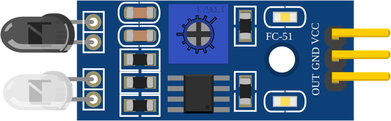
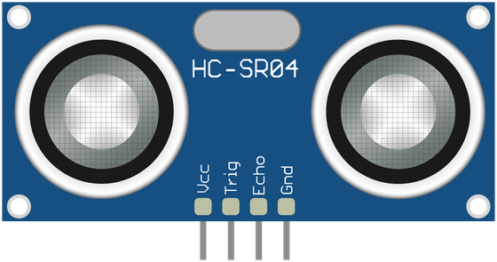
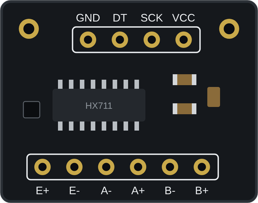
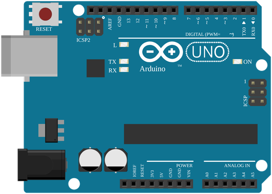
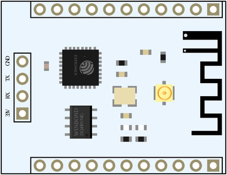
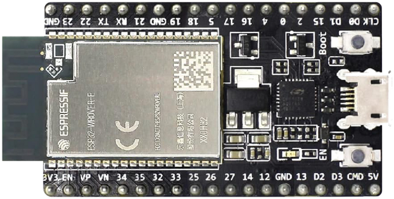

Every working day, in city traffic
Letter mail is down 25% in two years. Couriers still drive fixed routes — without knowing if a postbox is empty.
Why are we still paying to collect air?
Problem & risk
~€2 / l fuel
€11.87 / h courier
~2.7 kg CO₂ / l
2025: 112 postboxes planned for removal, 83 removed. If costs keep growing, elderly residents and small communities lose access.
Solution & technological advantage
An affordable, modular IoT kit that turns existing postboxes into connected infrastructure.
in components
→ analytics platform
route optimised
No new postboxes. No new vehicles. No rebuilt courier software.
Live demonstration
Business model & economics
in components, excl. VAT
hardware for 164 freestanding postboxes
subscription for monitoring, analytics and route optimisation
fewer trips · less fuel · fewer unproductive hours
measured in the pilot
Engineering & technical reliability
FrostMoistureRoad salt
Physical postbox monitoring, connected to digital route planning.
Prototype components






Team
Pilot proposal
We measure
Visits to empty postboxesSensor accuracyMileage & fuelCourier timeActual savingsAccess to the pilot postboxes, the current collection routes and one dispatcher to work with.
Vision & impact
Let's start with Latvijas Pasts in Riga — and continue to Europe.
We are EmptyLess. Thank you.
emptylessteam@gmail.com